11.4 Strong Serializers
So far we only have considered serializers which result in a search tree which depth grows quadratically in the number of tasks on a resource. In this section we will introduce a serializer where the depth of a search tree grows only linear in the number of tasks. In each choice node we will order several tasks not only two tasks. each choice node but several of them. This is done by stating that a single task must precede all other tasks on a resource.
A further disadvantage of the bottleneck serializer considered in Section 11.3 is its static bottleneck criterion. Instead we take the changing size of domains during run time into account to select a resource which should be serialized. This is also the approach chosen for the first-fail distribution strategy.
supply
We start with a better criterion to select a resource. Let  be the set of tasks on a resource
be the set of tasks on a resource  . The available time to schedule all the tasks in is
. The available time to schedule all the tasks in is  . This value is called the supply of . The overall time needed to schedule the tasks in is
. This value is called the supply of . The overall time needed to schedule the tasks in is  .
.
demand, global slack
This value is called the demand of . The difference between supply and demand is called global slack of ( ) and denotes the free space on the resource. The smaller the value of the global slack the more critical is the resource (the tasks on it can be shifted only in a very limited way).
) and denotes the free space on the resource. The smaller the value of the global slack the more critical is the resource (the tasks on it can be shifted only in a very limited way).
Hence, one could use the global slack as a criterion to select a resource. But a small example reveals that this criterion has still an important flaw: it is too coarse-grained. Assume to be the set 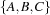 described in the following table.
task | domain |
|
|---|---|---|
A | 2 | |
B |
| 5 |
C |
| 4 |


The global slack is  . But now consider the set 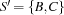. We obtain 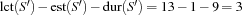. This means that for
. But now consider the set 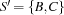. We obtain 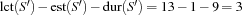. This means that for  and
and  we have far less free place to shift the tasks than it is indicated by the global slack. Thus, we refine our criterion as follows.
we have far less free place to shift the tasks than it is indicated by the global slack. Thus, we refine our criterion as follows.
task interval
Let  and
and  be two tasks on the same resource and the set of all tasks running on . If 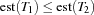 and
be two tasks on the same resource and the set of all tasks running on . If 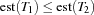 and  , we call the set
, we call the set  the task interval defined by and (see also [CL94]). Intuitively, a task interval is the set of tasks which must be scheduled between
the task interval defined by and (see also [CL94]). Intuitively, a task interval is the set of tasks which must be scheduled between  and 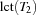. Let 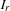 be the set of all task intervals on the resource .
and 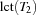. Let 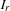 be the set of all task intervals on the resource .
 ) is now defined as
) is now defined as 
critical resource
If two resources have the same local slack, we use the global slack to break this tie. Thus, we select the resource next for serialization which is minimal according to the lexicographic order  . The selected resource is called the critical resource. Note that a local slack of a resource with
. The selected resource is called the critical resource. Note that a local slack of a resource with  tasks can be computed in
tasks can be computed in  time.
time.
Next we will determine the constraints to distribute with. Let  be the set of tasks on the critical resource which are not ordered with all other tasks on yet. Using the ideas of edge-finding we compute the set
be the set of tasks on the critical resource which are not ordered with all other tasks on yet. Using the ideas of edge-finding we compute the set  of all tasks in which can be scheduled first:
of all tasks in which can be scheduled first:  In a distribution step each of the tasks in , say , may be scheduled before all others and can be deleted from . The task in which is smallest according to the lexicographic order
In a distribution step each of the tasks in , say , may be scheduled before all others and can be deleted from . The task in which is smallest according to the lexicographic order  is first selected for distribution. By this choice we leave as much space for the remaining tasks to be scheduled on the resource. We now distribute with the constraints that precedes all other tasks in :
is first selected for distribution. By this choice we leave as much space for the remaining tasks to be scheduled on the resource. We now distribute with the constraints that precedes all other tasks in :  If this choice leads to failure, the next task in is tried according to our criterion.
If this choice leads to failure, the next task in is tried according to our criterion.
The overall strategy is as follows. We select a critical resource according to our criterion developed above. Then we serialize the critical resource by successively selecting tasks to be scheduled before all others. After the critical resource is serialized, the next critical resource is selected for serialization. This process is repeated until all resources are serialized.
The described serializer follows the ideas of [BLN95] which in turn adopts ideas of [CP89]. The serializer is available through Schedule.firstsDist.
We immediately apply our new serializer to the bridge problem.
{ExploreBest {Compile Bridge
Schedule.serialized
Schedule.firstsDist}
Earlier}
The optimal solution can be found and its optimality can be proven with only 90 choice nodes. Now the proof of optimality (problem OptBridge) needs only 22 choice nodes.
But we can do better. In addition to the set of tasks we can compute the set  of tasks which may be scheduled after all other tasks (see also Section 11.3). In this case the task which is tried first to be scheduled after all the others is the one which is maximal according to the lexicographic order . A further serializer computes both and . Then it selects the set which has the smallest cardinality. This serializer is available through
of tasks which may be scheduled after all other tasks (see also Section 11.3). In this case the task which is tried first to be scheduled after all the others is the one which is maximal according to the lexicographic order . A further serializer computes both and . Then it selects the set which has the smallest cardinality. This serializer is available through Schedule.firstsLastsDist.
Using Schedule.firstsLastsDist we can find the optimal solution and prove its optimality with only 30 choice nodes (see Figure 11.17). Note that in contrast to Figure 11.15 where we have needed 8 solutions to reach the optimal one, we now find the optimal solution immediately. The size of the search tree is reduced by more than an order of magnitude.
The optimality of the problem can be proven with only 4 choice nodes.
Let  be the number of resources to consider in a scheduling problem and let be the maximal number of tasks on a common resource. Then the described serializer has a run time complexity of
be the number of resources to consider in a scheduling problem and let be the maximal number of tasks on a common resource. Then the described serializer has a run time complexity of  if a resource has to be selected and 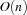 if only the set or has to be computed.
if a resource has to be selected and 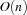 if only the set or has to be computed.